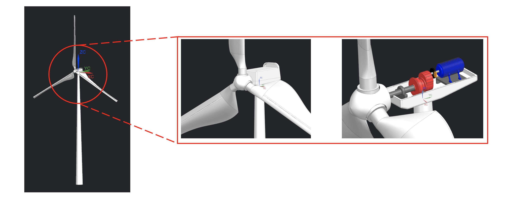
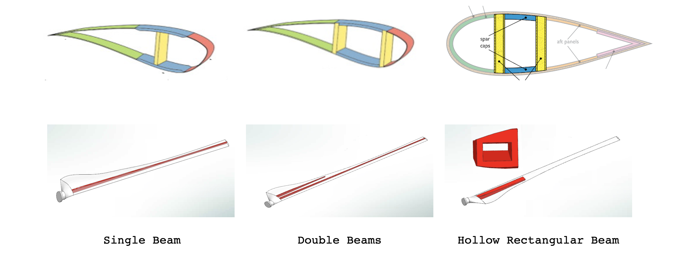
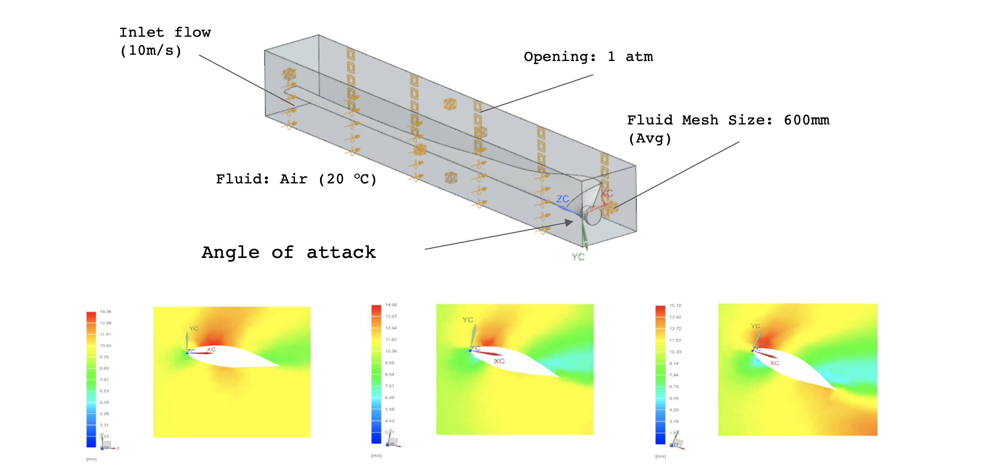
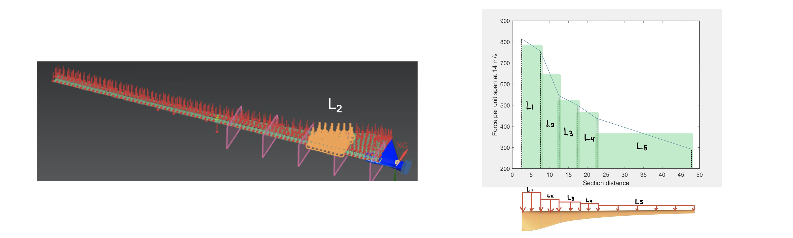
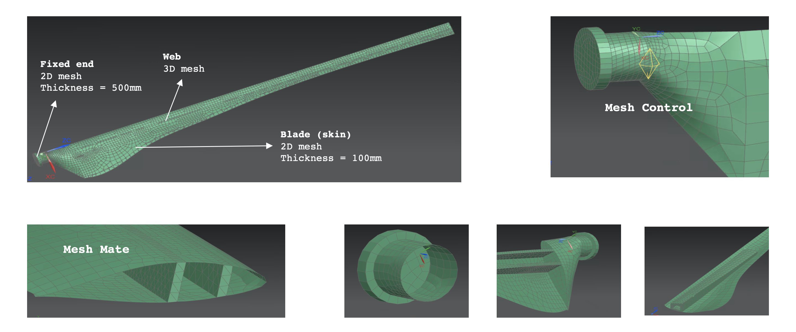
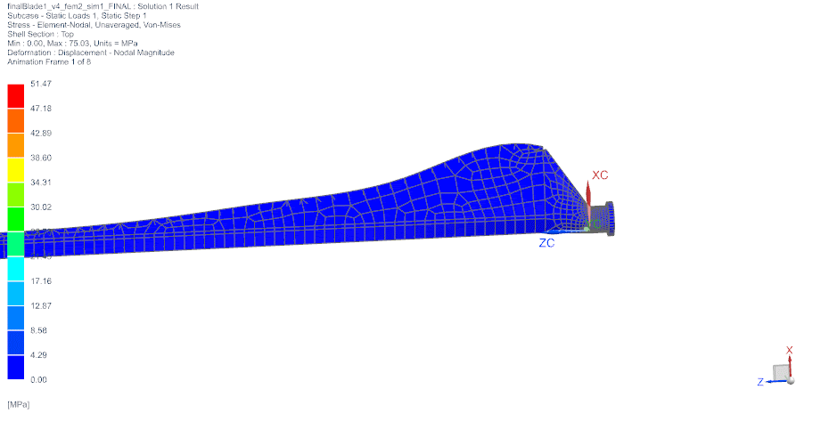
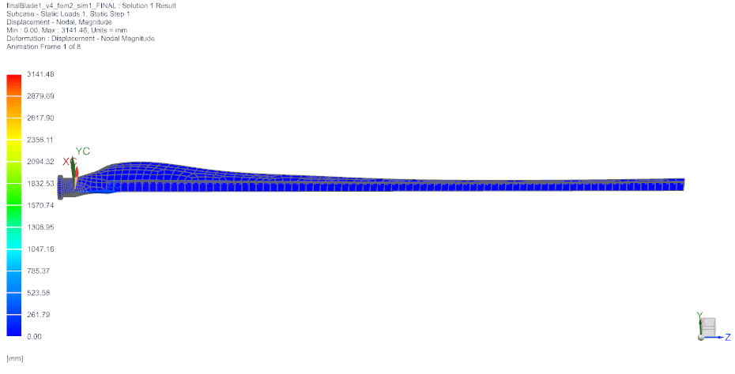

Nowadays, renewable energy, particularly wind power energy, is one of the fastest-growing renewable energy resources. As the demand for renewable energy grows, the wind industry is finding ways to boost the energy output of wind turbines. One way to increase energy from turbines is to increase the size of the rotor blades (weighing around 36 tons) in order to produce more power. The increasing size of blades can put more pressure on the structure and other components in the turbine, and the additional pressure increases the chance of blade failure.
The objective of this project was to create a wind turbine model to perform Finite Element Analysis (FEA) and Computational Fluid Dynamics (CFD) analysis to provide safe energy production solutions. For the model, the blade, gearbox, and body structure will be designed with complex geometry features using NX (shown in figure 1.1).
With the created model, NX simulation will be performed on two different aspects to provide safe energy production solutions: (1) CFD analysis on the blade to get a lift and drag coefficient and (2) structural analysis in terms of different inner structures (web) design (figure 1.2), materials, and wind speed. Specifically for the structural analysis, two types of failure would be considered - crash between the blade and the tower by the deflection of the blade and the tensile failure of the blades.
The most complicated part among the components is the blade. Firstly, several values are calculated, chord length, radius, and pitch angle for each section. After several computations, the Airfoil plotter (NACA 4415) tool was used to visualize each section of the blade and export the 97 regularly spaced points on each airfoil.
The aerodynamic forces could be derived from using NX flow analysis and MATLAB. To prevent tensile failure from the bending stress and a crash due to the deflection, suitable web design, and materials were required. Therefore, the 3 web designs described in the design part were subjected to structural analysis, and 3 different materials: carbon fiber composite, fiberglass composite, and lignocellulosic composite were applied to the blade.
CFD analysis was conducted on the blades to compute their lift and drag coefficients in terms of 3 different angles of attack - 10, 20, and 30 degrees. NX flow simulation solved Navier-Stokes equations to visualize the fluid motion and compute the lift and drag coefficients. The goal was to find the greatest lift coefficient and the smallest drag coefficient that maximized energy efficiency.
The CFD was conducted by using boundary conditions as shown in figure 2. As a result, Lift and drag ratio was the greatest at a 10-degree angle of attack. According to the NX drag lift report, the lift coefficient and drag coefficient were 1.4 and 0.2 respectively. Additionally, the velocity distributions of the air at 3 different angles of attack were shown in Figure 2.
The forces from L1 to L5 were uniformly distributed on each section (figure 3). So Figure 3 shows how the 5 sections were divided and how the loads were applied. Force corresponding to each wind speed and different blade location was estimated by using numerical methods. The uniformly distributed force corresponding to each wind speed was calculated through MATLAB by using the trapezoidal rule to calculate the area below the curve.
As shown in figure 4, after generating a combined mesh of 2D and 3D, mesh control was applied where the maximum stress was located. By using the mesh convergence method, the fine mesh could be applied where the stress was concentrated and unnecessary computation time was reduced with having accurate results.
Figure 5.1 shows one of the results of the FEA analysis. More details (numerical results) are in the video (figure 5.2).
The conclusion which can be drawn from this study were these: (1) different designs of the web are likely to have the greatest impact on deflection, (2) even if the design of the web is changed, there is no significant effect on the stress on the blade, (3) the larger the contact area with the blade, the larger the load acting on the web, (4) the larger the young's modulus, the stiffer the material and the larger the tensile stress, the safer the material, and 5) the wind speed is the biggest factor that changes the maximum stress and displacement of the blade.
 